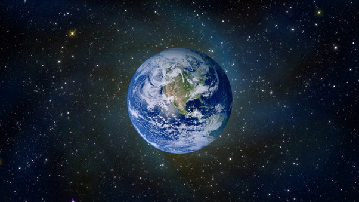

SAILING TO JAMBŪDVĪPA
Why Did Srila Prabhupada Call the Earth a Globe?
BY: MAYESVARA DASA
Jan 07, 2018 —IRELAND (SUN) —
The following is a continuation of the discussion from our previous paper entitled, "Does the Earth Float in Space?" In sections 1.1 and 1.2 of the previous paper we discussed how the Srimad Bhagavatam describes the planets floating in space by the movement of air (not gravity). The Earth (Bhu-mandala), however, is an exception to the other planets because it is held by Ananta-sesha (not floating in space). The Earth, in fact, is described as a large circular plane that spans along the center of the universe. Both of these descriptions regarding the planets and the Earth itself have far-reaching implications that radically challenge the current belief in so-called space travel, the nature of planets, and particularly the nature of our own Earth. The paper can be found here.
(1.3) HISTORICAL CONTEXT OF SRILA PRABHUPADA'S USAGE OF TERMS LIKE 'EARTH PLANET' AND 'EARTH GLOBE'
In this section (1.3) we will attempt to answer the question of why Srila Prabhupada used the terminology ‘Earth globe’ and ‘Earth planet’ to refer to the Bhu-mandala (the Earth of Srimad Bhagavatam) which is otherwise described as a great circular plane held by Ananta-sesha (a description having nothing in common with the concept of an Earth globe floating in dark space). Due to the length, this section will again have to be divided into three parts. In this first part we will look at some historical context.
First a word of explanation regarding the sub-title of this section 1.3: "Historical Context of Srila Prabhupada’s usage of Terms like ‘Earth Planet’ and Earth globe’". From the sound of this sub-title, one may get the impression that rather than presenting Srila Prabhupada as the messenger of Godhead expounding the summun bonum (Srimad Bhagavatam) or absolute knowledge beyond relativity of material time and place, this type of language may seem to relativize Srila Prabhupada as someone whose knowledge of transcendental subject matters was conditioned by historical circumstances. In a purport to Srimad Bhagavatam, Srila Prabhupada writes:
As confirmed in Bhagavad-gita (4.34), upadeksyanti te jnanam jnaninas tattva-darsinah: "one who has seen the truth can impart knowledge." The word tattva-darshi refers to one who has perfectly realized the Supreme Personality of Godhead. Such a person can become a guru and propound Vaishnava philosophy all over the world. (SB 5.15.4 purport)
It is certainly our understanding that Srila Prabhupada is a transcendental personality, a pure devotee of Krishna, and an empowered representative of Krishna who came to deliver The Message of Godhead in the form of Bhagavad-gita, Srimad Bhagavatam and Chaitanya Charitamrita. Srila Prabhupada is unquestionably a tattva-darshi (seer of the truth), and certainly not an ordinary person conditioned by Western scientific ideas (in regards to the shape and nature of the Earth), nonetheless, there is a historical context in which the gradual revealing of Srimad Bhagavatam’s concept of the Earth has come to light. We shall look at this historical context presently. As we shall see, Srila Prabhupada’s fidelity to the Absolute Truth is shown in his emphatic insistence that the fifth canto cosmology be displayed in the Temple of Vedic Planetarium ‘exactly’ as it is described by Sukadeva Goswami:
Prabhupada: ..."We are intending to make a huge planetarium. If you can help us?"
Tamala Krishna: Mentioning the Fifth Canto, Bhagavatam?
Prabhupada: Exactly to the description of Fifth Canto, we want.
(Room Conversation, May 8 1977, Hrishikesh)
IS THERE ANYTHING NEW TO BE SAID?
In the Bhaktivedanta Vedabase, under a section called His Final Instructions, Srila Prabhupada is quoted as saying:
"There is nothing new to be said. Whatever I had to say, I have already said in my books. Now you must all try to understand it and continue with your endeavors."
For anyone familiar with Srila Prabhupada’s books, as well as the transcripts of his lectures and conversations, he constantly refers to the Earth as ‘a globe,’ ‘a planet,’ ‘round,’ ‘floating,’ etc. A further search will reveal a selection of statements wherein he seemingly rejects the idea of a flat-Earth in favour of the idea that the Earth is a round planet. [We will look at these statements regarding the ‘flat-Earth’ idea in a further series of papers and discuss them all in their proper context].
It is a fact that in most instances when Srila Prabhupada translates Sanskrit names for the Earth, it is in a manner that suggests we are living on an Earth globe or an Earth planet. For example, he refers to King Prithu’s travels around 'the globe,' (bhuvo mandalam (SB 4.16.20), or Svayambhuva Manu ‘leading a huge army whose trampling feet cause the globe of the earth (mandalam bhuvah) to tremble.’ (SB 3.21.52-54) Srila Prabhupada constantly used terms such as ‘Earth planet’ or ‘planet Earth’, ‘Earthly planets’, ‘Earthly planetary systems’, and ‘Earth globe’. There are many hundreds of such statements were Srila Prabhupada refers to the Earth as ‘a planet,’ or as ‘a globe,’ or as ‘round.’ For example:
"Just like this universe is a jagad-anda, is a big round ball, anda. Anda means egglike, just like egg is round. Therefore it is called brahmanda. It is a round ball. Every planet is round, and the universe is also round, and the Vaikunthas are also round, all round."(Madya-lila 20: 146-151, New York, December 3, 1966)
Srila Prabhupada’s terminology suggests not only that Earth is a round globe-shaped planet, but also that there are many of such Earth like planets; indeed the language suggests a whole planetary system of such Earth globes. Since Srila Prabhupada uses the terminology of ‘Earth planet’ and ‘Earthly planetary system’, a sincere disciple or follower of Srila Prabhupada may be doubtful to hear of this apparently ‘new idea’ that our own Earth is not a globe in space, but simply part of a larger Earth plane called Bhu-mandala. I should say first of all that the Bhu-mandala (Earth circle) is not actually ‘a new idea.’ The idea of the Earth as a circular plane is simply an idea that had been covered over by time. The idea of the Earth as a globe is actually the relatively ‘new idea’, having appeared only in the last few hundred years. The Bhu-mandala concept and our place upon it is only coming to light again as the Mayapur Temple of Vedic Planetarium (TOVP) rises and an understanding of the Srimad Bhagavatam’sfifth canto becomes clearer.
Nonetheless, a loyal follower of Srila Prabhupada may be justifiably weary that someone appears to be misrepresenting Srila Prabhupada who otherwise referred to the Earth as a globe and a planet. We shall look later at a few of Srila Prabhupada’s somewhat ambiguous and cryptic replies to questions regarding the shape of the Earth, but apart from these, Srila Prabhupada never made any explicit statement that the Earth is not a globe. Srila Prabhupada mostly spoke of the Earth in the conventional sense that it is a globe. Therefore, the purpose of this paper is not to claim that Srila Prabhupada ever directly said ‘the Earth is not a globe’; but rather, to hopefully substantiate the following claim: that Srimad Bhagavatam itself describes that the Bhu-mandala (Earth) is not a globe; and that our own area of the Earth is surrounded by more lands and oceans belonging to the great Earth circle.
We shall further argue that the reason why Srila Prabhupada called the Earth a globe, was not because that is what Srimad Bhagavatam actually teaches, but merely because no clear idea of the Bhu-mandala conception—nor its incompatibility with the so-called globe idea—had been established (or even barely thought about) by the time of Srila Prabhupada’s departure in November 1977. We will substantiate this view with reference to a number of Srila Prabhupada's own statements, particularly the Conversation with Vedic Astronomer (April 30 1977, Bombay), and Discussion on Bhu-mandala (July 2, 3, & 5, 1977, Vrindavana). We shall look at these discussions in parts two and three of this section.
The disparity between the Vedic and modern world-views regarding the shape, size, and nature of the Earth had not even been raised as an issue until June/July of 1977 in a series of conversations called Discussion on Bhu-mandala. These conversations took place just a few months before Srila Prabhupada entered samadhi in November of that same year. The discussions concluded with Srila Prabhupada emphasizing that we “Take the version of Bhagavatam…we have to accept shastra”. (Discussion on Bhu-mandala, July 5, 1977, Vrindavana)
The explanation of why Srila Prabhupada called the Earth a globe is actually very simple: In the mid 1970's Srila Prabhupada initiated a daring scheme to re-establish the Vedic cosmology in the modern world via the construction of a Temple of Vedic Planetarium. However, the knowledge of Vedic cosmology had been covered over for many centuries and many of the details were unknown even to Srila Prabhupada. In the absence of a clear conception of Bhu-mandala, Srila Prabhupada had simply worked with the conventional understanding of the Earth as a globe floating in space. There is, otherwise, no great mystery as to why Srila Prabhupada spoke of the Earth in this way. To look for some deeper significance to Srila Prabhupada’s use of the word ‘globe’ or ‘planet’ is to make a mountain out of a mole-hill. This will hopefully become apparent the more we look at the details of the issue.
Despite speaking of the Earth with the conventional understanding that it is a globe floating in space, the bottom line is that Srila Prabhupada ultimately believed the Earth must be as Srimad Bhagavatam describes it, and therefore he insisted time and again that his disciples present the Srimad Bhagavatam’s version in the TOVP. Therefore, the true nature of the Earth’s shape and size will eventually come to light only because of Srila Prabhupada’s own catalytic inspiration to revive Vedic cosmology in the modern world. Srila Prabhupada speaks about the unfolding of the Vedic cosmological ideas in the following lecture:
"That is our plan, to make a very big temple and to show all the planetary system within that from Srimad Bhagavatam. It will not be an ordinary temple, so that people from the whole world, they'll come. This is our contemplation…There are many lokas, Caranaloka, other. They are all described. So if there is chance, we shall present these lokas, how they are situated, where they are situated, how they are moving, how the sun is moving around them. The sun is not fixed up; sun is moving. So all these things, we have got such dream to show. If there is opportunity, we shall do…there are so many things to be known still from Vedic literature, it is not yet unfolded, but we are trying." (SB 7.9.8, Mayapur, February 15, 1976)
During a discussion on a different topic, Srila Prabhupada makes a similar statement about the unfolding of Krishna’s plans:
Syamasundara: So God's plan is unfolding itself everywhere, whether we understand it or not.
Prabhupada: Yes. He's unfolding Himself. In Bhagavad-gita He is sending His representative for unfolding. (Discussions with Syamasundara dasa on Hegel)
Could the idea that the Earth is not a globe, be also part of Krishna’s unfolding plan? As mentioned, it was only a few months before his departure in 1977 that Srila Prabhupada along with his disciples even began to try to decipher the mysterious description of the Earth given by Sukadeva Goswami. These talks are recorded as Discussions on the Bhu-mandala. There are a few related conversations that we will also discuss. The possibility that the globe itself was a false construct of reality had not yet occurred to anyone, but that is the natural conclusion to be taken from Sukadeva Goswami’s clear description of Bharata-varsha’s location on Jambudwipa; indeed, as we shall see, Tamala Krishna Goswami, a senior disciple of Srila Prabhupada who had been working with a few other devotees on a map of the Bhu-mandala, was already aware of the implications of this concept to the globe idea:
"When Srila Prabhupada awoke after a night's rest, he opened his eyes and said, "They go from Los Angeles. You all think over it. Then I shall tell you." Srila Prabhupada was referring to the question which we had not yet solved: If the world is not a globe but part of Jambudvipa, which is the center of the huge, lotus-like Bhumandala, how does an airplane fly from Los Angeles to Hawaii to Tokyo and on to India? The scientists explain by saying that the airplane circles the globe. But according to Srimad-Bhagavatam, there is no planet earth as the scientists say, floating in space. Rather, there is Bharatavarsha with its seven continents and oceans and Himalayan Mountains." (TKG’s Diary: Prabhupada’s Final Days, July 3, 1977)
The ‘seven continents, oceans, and Himalayan Mountains’ that Tamala Krishna Goswami is referring to here are not the familiar features of our own known world, but are actually different regions on the rest of the Earth’s huge landscape that cover hundreds of millions of miles. The Himalayan Mountain itself is 80,000 miles high, 16,000 miles long and hundreds of thousands of miles across. This great Himalaya is actually further north along the vast Earth plane from our own mountain of the same name in India. This colossal Mountain forms the border between Bharata-varsha and our closest neighbour on the Earth plane called Kimpurusha-varsha. Clearly such a description of the Earth requires a radical evaluation of the belief that we are living on a globe-shaped planet flying through space. Certainly, our particular area of the Earth (Bharata-varsha) is not described by Sukadeva Goswami as a globe floating in space as we have discussed in previous papers, and as Tamala Krishna Goswami seemed to have ascertained from his reading of Srimad Bhagavatam. We shall present his discussions with Srila Prabhupada on the subject in parts two and three of this section which will follow in later papers.
Despite Sukadeva Goswami’s description of the Earth as a huge circular plane, disciples and followers of Srila Prabhupada may still feel doubtful regarding our various papers on the Sampradaya Sun that the Earth of Srimad Bhagavatam is not a globe. Their argument is that there is nothing new to be said! If such an idea regarding the Earth were true then Srila Prabhupada would have said it! An avid supporter of the globe concept may complacently think that everything is settled with reference to Srila Prabhupada’s statement: “There is nothing new to be said. Whatever I had to say, I have already said in my books." Since Srila Prabhupada throughout his books, lectures, and conversations only refers to the Earth either as a globe and a planet, a globe supporter may feel justified to put the feet up, thinking the argument has been quickly settled.
However, the translation to the description of the Bhu-mandala (Earth circle) is also part of Srila Prabhupada’s books! Srila Prabhupada’s many instructions to exactly present the fifth canto cosmology are also part of Prabhupada’s books! Srila Prabhupada’s discussions on the issue with Tamala Krishna Goswami are also part of Prabhupada’s books! There are some persons who may wish that these parts of Srila Prabhupada’s books had never come to light, and who may also wish to keep them buried in obscurity. We, therefore, have to assiduously apply the second part of Srila Prabhupada’s statement: “Whatever I had to say, I have already said in my books. Now you must all try to understand it." We have to first of all understand what Sukadeva Goswami has said about the Earth, (as well as the implications this has for our present understanding of the Earth as a globe). Next, we have to comprehend Srila Prabhupada’s instructions to accurately depict Sukadeva Goswami’s description within the TOVP. Then we have to explain why Srila Prabhupada did not explicitly preach about Sukadeva Goswami’s description of the Earth. All of this can be found within Srila Prabhupada’s books (including correspondence, transcriptions of conversations, lectures, etc.).
"I have instructed everything in my books." (Letter to: Dina Dayala, Mayapur, 25 February, 1976)
By piecing all of this together we hope to demonstrate that the Bhu-mandala concept of the Earth is something that Srila Prabhupada would have accepted and presented via the TOVP despite his many statements that otherwise refers to the Earth as a globe in space.
THE ANSWER IS IN MY BOOKS
So if we raise the question: “Is the Earth a globe floating in space?” how would we go about understanding the answer from Srila Prabhupada’s books? Would the answer come from simply finding examples of Srila Prabhupada’s usage of words like ‘Earth planet’ or ‘Earth globe’, or would it come from studying the original verses that describe the Earth as it is? Srila Prabhupada clearly instructed us to follow the original description:
Prabhupada: ..."We are intending to make a huge planetarium. If you can help us?"
Tamala Krishna: Mentioning the Fifth Canto, Bhagavatam?
Prabhupada: Exactly to the description of Fifth Canto, we want.
(Room Conversation, May 8 1977, Hrishikesh)
So if we ask: what is the shape and size of the Earth described in Srimad Bhagavatam? we need only look to Srimad Bhagavatam itself to find the answer as Srila Prabhupada directed:
Paramahamsa: Srila Prabhupada, when you are not present with us, how is it possible to receive instructions, for example, on questions that may arise?
Prabhupada: Well, the questions... Answers are there in my books." (Morning Walk, May 13, 1973, LA)
“Please continue reading my books seriously and everything will be revealed to you." (Letter to: Babhru, Satyaki, 18 September, 1975)
"So utilize whatever time you find to make a thorough study of my books. Then all your questions will be answered." (Letter to: Upendra, 7 January, 1976, Nellore)
In a letter to Satsvarupa dasa Goswami, Srila Prabhupada said:
“I have given you everything, so read and speak from the books and so many new lights will come out.” (Letter to Satsvarupa, Los Angeles, 16 June, 1972)
Satsvaraupa dasa Goswami has mentioned this letter many times and was obviously both touched and inspired by Srila Prabhupada’s encouraging statement about finding “many new lights.” In the letters above, Srila Prabhupada presents the study of Srimad Bhagavatam as a very personal relationship between Krishna’s devotees and Krishna Himself (in the form of Srimad Bhagavatam). One statement that inspired my own study of Srimad Bhagavatam was in the purport:
...somehow or other if someone hears with rapt attention from the right person, at the very beginning one can assuredly see Lord Sri Krishna in person in the pages of Bhagavatam (SB 1.3.44 purport)
Srila Prabhupada was never envious of the idea that his disciples and followers would find their own ‘answers’, ‘revelations’, ‘new lights’, and even Krishna Himself in the pages of Srimad Bhagavatam.
"You always have my blessings, the father always wishes that the son may be more successful than himself. This is the spiritual conception. If one is doing well, then the materialistic persons become envious and try to check his progress. This was actually so with Prahlada Maharaja, he was only 5 years old, he was preaching Krishna consciousness to his school friends, and the father Hiranyakasipu became so envious that he attempted to kill his 5 year old son in so many ways. Krishna consciousness is just the opposite, if someone is doing well then the attitude of the devotee is to give him all facility to go on and improve more and more. Yes we are running on the mercy of the spiritual master, to understand this point is to get mercy more and more. Yasya prasadat bhagavata prasada." (Letter to Yogescandra, Vrindaban, 7 December, 1975)
This was an attitude that Srila Prabhupada expressed on many occasions:
"Actually, Krishna was the hero, but He gave position to His devotee: "You become the hero, I shall become your charioteer." That's all. Don't you see how Arjuna has become more than Krishna? Krishna says, "Arjuna, you are hesitating to fight, but you know that all these person who have assembled in this battlefield, they are not going back. They are already killed. That is My plan. You simply take the credit that you have killed them. That's all." (laughter) That He wants. Just like a father wants a son to see him more than himself. If a father is an M.A., he wants to see his son M.A., Ph.D., or something more. He's satisfied. He'll not tolerate anybody to become more than him, but he'll tolerate if his son becomes more than him. I'm giving you a crude example. Similarly, Krishna, or the Lord, wants to see His devotee more than Himself. That is His pleasure. He takes pleasure in that." (General Lectures, Los Angeles, November 13, 1968)
Srila Prabhupada wanted to train disciples that were loyal to the paramapara and to the Vedic shastra, but who were nonetheless ‘independently thought’ and ‘competent in all types of knowledge’. Even though Srila Prabhupada was jagad-guru, he never wished to monopolize that position as a platform to manipulate others. Rather he wanted all concerned to come to their own platform of self-realization, and to be re-established in their constitutional position of sat cit ananda—eternity, knowledge, and bliss. Srila Prabhupada never appreciated bureaucracy or monopoly of any kind. Srila Prabhupada’s distaste for self-serving monopoly that dominated over others is evident in the following letter:
"Krishna Consciousness Movement is for training men to be independently thoughtful and competent in all types of departments of knowledge and action,not for making bureaucracy. Once there is bureaucracy the whole thing will be spoiled. There must be always individual striving and work and responsibility, competitive spirit, not that one shall dominate and distribute benefits to the others and they do nothing but beg from you and you provide." (Letter to Karandhara, Bombay 22, December 1972)
It was with this kind of empowering attitude that Srila Prabhupada instructed some of his own disciples to “carefully study the details of the fifth canto and present a working model of the universe” (Letter from Srila Prabhupada to Svarupa Damodara dasa, April 27, 1976). According to Tamala Krishna Goswami’s account, Srila Prabhupada seems to have practically handed this subject over to his disciples:
Prem Yogi showed Srila Prabhupada some illustrations from the Srimad Bhagavatam, Fifth Canto, and explained them briefly. Prabhupada was impressed with his proper understanding. Prabhupada showed him the Mayapur model and explained what we intended to do there. Srilla Prabhupada then expressed his concern: "We must exactly follow the description of Bhagavatam. As we are going to spend many crores of rupees, and there will be those who will try to find fault in our presentation, 'Caesar's wife must be above suspicion.' I have explained whatever I could already in my books. Now my brain is no longer able to work properly. You young men can tax your brains to understand the Sanskrit and English descriptions and present them." (TKG’s Diary: Prabhupada’s Final Days, May 30 1977)
This study will obviously draw out details that Srila Prabhupada never had the time to study and present himself. However, if the model is presented properly according to Srimad Bhagavatam, it would only be a cause of pride for Srila Prabhupada in his disciples and followers; not that he would feel that they were trying to surpass him. Nor would a sincere follower of Srila Prabhupada ever feel that way—a sincere follower’s only wish is that Srila Prabhupada be glorified for reawakening Krishna consciousness in the world.
So what 'answers', 'revelations', and 'new lights' will we find in Srimad Bhagavatam regarding the Earth? In our articles on Sampradaya Sun we have been presenting the argument that our Earth is not a globe, but just part of a greater Earth that continues in all directions along a horizontal plane. Is such an idea corroborated by Srimad Bhagavatam? Is such an idea, a “new light”, or simply a speculation? Does such an idea try to surpass the idea of the Earth that Srila Prabhupada presented, or does it actually establish the tattva of the Earth as Srila Prabhupada requested Tamala Krishna Goswami to do: “Find out from our side according to Srimad Bhagavatam” (Bhu-mandala Diagram Discussion, July 2 1977, Vrindavana).
What does ‘our side’ (Srimad Bhagavatam) even say about the Earth globe? Most devotees at this point are still completely in the dark regarding the Srimad Bhagavatam's description of the Earth and cannot answer this question. Srimad Bhagavatam's answer is nonetheless clear: there is no Earth globe—it doesn’t exist!
However, since Srila Prabhupada throughout his translations, purports, conversations, lectures, and correspondence invariably translated Sanskrit names for the Earth as ‘globe’ or ‘ planet’, the reader may feel that any reference to the Earth in Bhagavata-gita and Srimad Bhagavatam is de vacto (whether right or not) referring to the so-called Earth globe. There is no question about Srila Prabhupada’s usage of the words such as ‘Earth globe’ and ‘Earth planet.’ The question is, does this terminology and conception equate with the original description of the Earth that is presented in Srimad Bhagavatam? In other words, does the Sanskrit name ‘bhu mandala’ or any other name for the Earth such as bhu-gola, ksiti-mandala, dhara-mandala, etc., actually refer to a round Earth globe floating in space, or do they refer to a very different description of the Earth? If there is no correlation between the two concepts then we have to ask why Srila Prabhupada equated them as such.
To answer the first part of this question we had to look at the original description of the Earth provided by Sukadeva Goswami. Our motivation here is not to be ‘over-intelligent’ or to 'jump over the head' of the acharya as some may accuse, but rather to fulfill Srila Prabhupada’s own instruction to “carefully study the details of the fifth canto and present a working model of the universe” (Letter from Srila Prabhupada to Svarupa Damodara dasa, April 27, 1976). One cannot make a working model of the Vedic universe unless one works from the original description provided. Nor can one make a working model of Vedic cosmology if one is still thinking Western cosmology is the standard model to which the ideas in Srimad Bhagavatammust conform. The Srimad Bhagavatam presents its own version of reality to which we must conform!
The study of the fifth canto has been going on slowly for over forty years, and has certainly not been concluded. We are merely adding our own contribution to the work began by previous devotees such as Sadaputa dasa, Danavir Goswami, and others. Whilst appreciating the service of these devotees in presenting the Srimad Bhagavatam’s cosmology to the rest of the devotee community, it is also necessary to point out some of the flaws in their presentation. We do this not from a spirit of envy or discord, but to ensure that the Srimad Bhagavatam’s cosmology is correctly presented in the TOVP as it is described in Srimad Bhagavatam.
There cannot be a meaningful discussion on this topic unless one is aware of the Srimad Bhagavatam’s definition and description of the Earth. We have to remember that anytime a name for the Earth is mentioned in Srimad Bhagavatam, it is referring to the Earth described in chapters 16-26 of the fifth canto. This is our reference point. We cannot simply take Srila Prabhupada’s constant usage of words like ‘Earth globe’ or ‘Earth planet’ as evidence that the Earth is, in fact, a globe; rather, we have to understand the meaning of Bhu-mandala from the description provided.
Thus taking Srila Prabhupada’s instruction to ‘carefully study’ the fifth canto, and to ‘tax your brains to understand the Sanskrit and English descriptions’, the first thing that we need to establish is a description and definition of what is meant by the Earth [as it is described in Srimad Bhagavatam’s fifth canto chapters 16-26]. We have already presented this description of the Earth in a dozen or so articles on Sampradaya Sun, and we will continue to present further details of this great Earth circle in later papers. In one of these previous papers we looked at the original descriptions and definitions of all the names relevant to this discussion such as Bhu-mandala, Bhu-gola, and Bharata-varsha and none of them are, in fact, a description of an Earth globe. The paper is called: "The Earth is Not a Globe Part 3:" Definitions, Descriptions, and Translations of the names Bhu-gola, Bhu-mandala, and Bharata-varsha, and can be found here.
There is only one Earth in Srimad Bhagavatam, and that is the one described through ten chapters of the fifth canto (chapters 16-26). The names, measurements, and characteristics of the Earth (Bhu-mandala) with its various features are all provided. By reading and studying the translation of chapters 16-26 of the fifth canto, one quickly finds that there is a massive disparity between the original description of the Bhu-mandala (Earth circle) and the assumed Earth globe or Earth planet. The Earth is described as a massive circular plane that is held by Ananta-sesha, and not a small round globe held up by gravity. So there is a problem to be addressed here. The problem is that there is nothing in Srimad Bhagavatam corresponding to the idea that the Earth is a round globe-shaped planet floating in space. One can certainly cite a translation or statement wherein Srila Prabhupada refers to the Earth in these terms, but one will not find a corresponding verse in Srimad Bhagavatam that describes such an entity. Therefore, although Srila Prabhupada refers to King Prithu’s travels around 'the globe,'(bhuvo mandalam (SB 4.16.20), or Svayambhuva Manu ‘leading a huge army whose trampling feet cause the globe of the earth (mandalam bhuvah) to tremble’, (SB 3.21.52-54), we can understand from the original description of the Earth (bhu mandalam) in chapters 16-26 of the fifth canto, that no such globe actually exists. King Pritu was, in fact, governing the entire sapta dwipa or seven islands of the Earth which is an area of over 200 million miles. The original description of the Earth in Srimad Bhagavatam is certainly not that of a globe floating in space. If anyone thinks otherwise then please present the relevant verses that describe such an entity.
If we say Balarama is the elder brother of Krishna, there are many verses in the Srimad Bhagavatam to confirm the statement:
"Then lotus-eyed Lord Sri Krishna, whose glories are most pious to hear and chant, returned home to Vraja with His elder brother, Balarama. Along the way, the cowherd boys, His faithful followers, chanted His glories." (SB 10.15.41)
Here Balarama is addressed as agra-jah (elder brother). The Sanskrit words agraja are used in many verses of Srimad Bhagavatam to describe the relationship between Krishna and Balarama. Because Balarama is the elder brother, Krishna is thus sometimes addressed as rama-anujah—the younger brother of Balarama (SB 10.30.12). In other verses Krishna is likewise addressed as Balarama’s younger brother:
he rāmāgaccha tātāśu sānujaḥ
My dear Baladeva, best of our family, please come immediately with Your younger brother, Krishna." (SB 10.11.16)
The word for younger brother here is anuja. Many similar verses establish that Balarama is the elder brother of Krishna. One can thus confidently agree to the statement that Srimad Bhagavatam teaches that Balarama is the elder brother of Krishna. The relationship is described in one way and not another. In Krishna lila, Krishna is the younger brother of Balarama, not the elder. Should one wish to argue that Krishna is the elder brother one would have to substantiate the claim with reference to shastra, but of course, no such reference will be found.
In the same way, the relationship of Bharata-varsha to Bhu-mandala is described in one way and not another. If one wishes to say that Bharata-varsha is a round globe floating in space, one needs to cite the particular verses from Srimad Bhagavatam that describe it as such. However, one will not find such a verse because the Srimad Bhagavatam describes the situation of the Bharata-varsha differently. Sukadeva Goswami teaches that our Earth area of Bharata-varsha is just part of the plane of Bhu-mandala, and is not a separate planet floating in space as the other planets are described. Bharata-varsha is specifically described as one of nine varshas (regions) on the central island of Bhu-mandala called Jambudwipa. According to Sukadeva Goswami’s description of the planets, there is no Earth globe floating in space.
Of course, Srila Prabhupada spoke of the Earth as a round planet floating in space, but the question is this: does this conception of the Earth as a globe floating in space have any reference point in Srimad Bhagavatam? Does Srila Prabhupada’s terminology match with the description of the Earth by Sukadeva Goswami; or is Srila Prabhupada just speaking of the Earth in conventional terms? Those who argue in favour of the Earth globe idea may do so because they feel it is their utmost duty to defend Srila Prabhupada’s statement that the Earth is a planet floating in space, but where is the verse in Srimad Bhagavatam (or any Purana) that describes it as such?
As mentioned, one cannot make a working model of the Vedic universe unless one works from the original description provided. Therefore, a follower of Krishna will begin with the faith that the Vedic description of the Earth is factual, despite it being at variance with the modern conception. Indeed, the difference in the two versions is grounds for investigating the reality of the modern conception, rather than a reason for doubting the Vedic version. Vaishnavas will accept the reality of the Earth as it is described by Sukadeva Goswami:
śrīmad-bhāgavataṁ purāṇam amalaṁ yad vaiṣṇavānāṁ priyaṁ
yasmin pāramahaṁsyam ekam amalaṁ jñānaṁ paraṁ gīyate
"Srimad-Bhagavatam is the spotless Purana (purana amalam). It is most dear (priyah) to the Vaishnavas (vaisnavanam) because it describes (giyate) the pure (amalam) and supreme knowledge (jnanam param) of the paramahamsas." (SB 12.13.18)
Here we read that Srimad Bhagavatam presents the supreme knowledge (jnanam param), and this obviously includes the supreme knowledge in relation to the Earth itself. In chapter 12 of Srimad Bhagavatam’s 12th canto the most important subjects of this great book are summarised. Interestingly, the Earth is included as one of these most important subjects:
"The Bhagavatam gives an elaborate description of the Earth's continents, regions, oceans, mountains and rivers. Also described are the arrangement of the celestial sphere and the conditions found in the subterranean regions and in hell." (SB 12.12.16)
The Earth in question here is the Bhu-mandala described in chapters 16-26 of the fifth canto. The Earth’s continents, regions, and oceans refers to the Earth’s seven great islands, with their various divisions and surrounding oceans (dvipa-varsha-samudranam). These islands and oceans cover an area of hundreds of millions of miles, and are not referring to the continents of our-so-called Earth globe. As mentioned in previous papers the topic of the Earth is not insignificant since the Earth is the biggest feature in the Vedic universe and is the setting for most of Krishna’s pastimes. As mentioned in the verse above, the description of the Earth in chapters 16-26 of the fifth canto includes the distance of planets and stars above the great Earth plane (jyotis-cakrasya samsthanam as well as the hells and subterranean heavens that are within the core of the great Earth itself (patala-naraka-sthitih). We have discussed the position of the subterranean heavens within the massive core of the Earth in a previous paper that can be found here.
Once the relevant texts describing the size and nature of Bhu-mandala have been pointed out, a qualified Vaishnava who sees through the eye of scripture (shastra cakshusha), should have no difficulty in immediately recognizing the true feature and extent of Bhumi. Aryans will take the word of Krishna as it is:
Who does not deviate from the instruction of the Lord, he is Aryan. All others, non-Aryan. The Aryans will take the words of God as it is, without any deviation. That is Aryan.An Aryan means advanced, advanced in knowledge, and one who is advanced in knowledge, he is advanced civilized. Rascal fools, how they can be civilized? Everyone is claiming "Aryan," but he does not know what is the business of Aryans...Real Aryan means one who is advanced in knowledge and goes by the order of Krishna, or God. (Morning Walk, September 4, 1975, Vrindavana)
Of course, the idea that the Earth is not a globe is pretty radical to the modern mind; but at least for Vaishnavas, if such an idea can be established on the basis of Srimad Bhagavatamand the acharyas then one should either agree, stay neutral, or make a counter argument based on shastra:
"So therefore we accept the Vedic injunction as truth. We haven't got to make research. We save time. So according to Vedic civilization, whatever is stated in the Vedas, we take it-fact. That's all. Sruti. Sruti-pramanam. Sruti means Vedas. Pramanam means evidence. According to Indian system... There are two persons talking, arguing, but the person who can give Vedic evidence, he is victorious. That's all. That is the system. Just like in law court two lawyers are fighting, but the lawyer who is giving evidences from the lawbook, he is accepted by the judge. And therefore, generally you will find, whenever we speak something, we give evidence from the shastra in Sanskrit, in all our books. That is the way of proving that whatever I am speaking, it is fact. (Room Conversation, April 7, 1972, Melbourne)
Again:
Madhudvisa: In other books, Srila Prabhupada, it says things and then in time you can see them, you can substantiate them. But some of the descriptions in the Bhagavatam are so fantastic that people, I mean, its very difficult for people to even...
Prabhupada: Therefore you have to believe only. You have to accept what Bhagavata says. That is your business. Not to try to make an experiment. That is not possible. It is already experimented, and the mature knowledge is stated there. You have to accept, that's all. Sruti-pramana. Sruti means Vedas. Evidence... Vedic literature there are three kinds of evidences. The most powerful evidence is sruti. If it is stated in the Vedas, that is first-class evidence. Therefore whatever we say, immediately quote some Vedic version, that is the way of understanding. Krishna says, Vyasadeva says, Parasara says, that's all. We don't require much proof. This is the first-class proof, when you find the statement corroborated by the Vedas. And sruti, smriti. Smriti means literature written according to the Vedic version. Sruti-smriti-puranadi [Brs. 1.2.101].
(Morning Walk, May 19, 1975, Melbourne)
In the following statement Srila Prabhupada explains the double standard employed in accepting scientific authority whilst denying Vedic authority. Devotees are not immune from this double-standard, ie., accepting the modern scientists as authorities whilst doubting (and even arguing against) the Vedic version:
"The Vedic system of acquiring knowledge is the deductive process. The Vedic knowledge is received perfectly by disciplic succession from authorities. Such knowledge is never dogmatic, as ill conceived by less intelligent persons. The mother is the authority to verify the identity of the father. She is the authority for such confidential knowledge. Therefore, authority is not dogmatic. In the Bhagavad-gita this truth is confirmed in the Fourth Chapter (Bg. 4.2), and the perfect system of learning is to receive it from authority. The very same system is accepted universally as truth, but only the false arguer speaks against it. For example, modern spacecraft fly in the sky, and when scientists say that they travel to the other side of the moon, men believe these stories blindly because they have accepted the modern scientists as authorities. The authorities speak, and the people in general believe them. But in the case of Vedic truths, they have been taught not to believe. Even if they accept them they give a different interpretation. Each and every man wants a direct perception of Vedic knowledge, but foolishly they deny it. This means that the misguided man can believe one authority, the scientist, but will reject the authority of the Vedas. The result is that people have degenerated." (SB 1.9.18 purport)
Again, in the purport below Srila Prabhupada encourages the reader of Srimad Bhagavatam to see through the eyes of scripture:
"Although it is not in our experience, there is a milk ocean within this universe. Even the modern scientist accepts that there are hundreds and hundreds of thousands of planets hovering over our heads, and each of them has different kinds of climatic conditions. Srimad-Bhagavatam gives much information which may not tally with our present experience. But as far as Indian sages are concerned, knowledge is received from the Vedic literatures, and the authorities accept without any hesitation that we should look through the pages of authentic books of knowledge (sastra-cakshurvat). So we cannot deny the existence of the ocean of milk as stated in the Srimad-Bhagavatam unless and until we have experimentally seen all the planets hovering in space. Since such an experiment is not possible, naturally we have to accept the statement of Srimad-Bhagavatam as it is because it is so accepted by spiritual leaders like Sridhara Svami, Jiva Gosvami, Visvanatha Cakravarti and others. The Vedic process is to follow in the footsteps of great authorities, and that is the only process for knowing that which is beyond our imagination." (SB 2.7.13 purport)
THE UNFOLDING VISION OF THE EARTH
So how did this situation come about? If Srimad Bhagavatam teaches that the Earth is not a globe, but a great circular plane, one would imagine that such a fantastic description of the Earth would be common knowledge in India, and an interesting topic of discussion. However, all knowledge and discussion of the Bhu-mandala in India seemed to have been practically buried over and left for dead. The foreign invaders of India and notably the British did a very good job of convincing the Hindus that the sacred Puranas were pure mythology.
Prabhupada: Yes, propaganda. That is the cause of India's cultural fall-down. These Britishers simply made propaganda that "Whatever you have got in India, this is all allegory, fiction. These shastras (scriptures) are nothing. But now you are learning from us England's work in India, that is your real... You are becoming civilized now. Otherwise, you are in the utopia, and all these sastras, throw it out." Because that was Lord Macauley's policy. Lord Macauley was sent to report how Indians can be governed nicely. So he reported that if you keep the Indians as Indians, you will never be able to govern them, because they are superior. You make propaganda that they are inferior and they will imitate you and then you can... That they did. (September, 28 1972)
Being unable to defend the Bhu-mandala concept, or to dare question the globe concept of reality, the Hindus gradually fell for the propaganda that the Vedic description of the great Earth circle is a fairy-tale from a pre-scientific age, and that modern science proves the real facts about our so-called planet. The Brahmans continued to chant the great Vedic mantra beginning om bhur bhuvah svaha, but steadily came to believe that bhur is a globe in space, and not the great circle described in their sacred literature. Enter the 20th century and video images of a so-called Earth globe from so-called outer space seemed enough to establish the Earth globe concept of reality as the undisputed champion. The Hindus had been left with practically no confidence in their sacred literature, and thus relegate the cosmological descriptions in the Puranas to something of a mere intellectual concept or curiosity that has no bearing or relevance on our present reality.
Come the 1970’s, and Srila Prabhupada initiated a grand plan to create a Temple of Vedic Planetarium (TOVP) in order to revive and present the Vedic cosmos as it is described in Srimad Bhagavatam. Bear in mind that Srila Prabhupada’s intention for the TOVP was not for the dry academic purpose of exhibiting some "antiquated cosmology of the Hindus." The TOVP was intended by Srila Prabhupada to be a weapon of war against all illusions created by scientism regarding the nature of the origins, nature, and purpose of the universe.
In the Lilamrta, Srila Prabhupada’s intention for the planetarium is revealed:
Tamala Krishna suggested that the planetarium would spell the downfall of Western civilization.
"Yes," said Prabhupada, "I want to expose that they are cheating. Their only interest is to make money, and for this they cheat. If you can make this planetarium, it will be a grand success, triumphant." (Srila Prabhupada Liamrta, Volume 6, Uniting Two Worlds, Return to Vrindavana, 1975-1977, SPL 52, I Have Done My Part)
Tamala Krishna predicted that the TOVP would create chaos in the educational fields:
Tamala Krishna: Your descriptions, especially this planetarium, will at first meet with a lot of heavy reaction. It is not going to be embraced immediately very favorably. It means that everyone who calls himself a Ph.D. is a fool, that students will laugh at their teachers, if what we say is correct. There will be chaos in educational circles.(Prabhupada chuckles)
Prabhupada: All right. (Discussion on Bhu-mandala, July 2 1977, Vrindavana)
If the Earth is not a globe, it would certainly create chaos for those who have been presenting it as such. But why would the members of the Hare Krishna movement even consider questioning whether the Earth is a globe or not? Well, one reason for considering the Earth is not a globe is because Srimad Bhagavatam describes it differently; the difference between the Vedic and modern world views thus creates a need for explanation, and the need for explanation opens up a big can of worms regarding the world as we know it; or rather, as we thought we knew it.
The TOVP is meant for the purpose of manifesting the reality of the universe as it comes down in disciplic succession from Krishna Himself. This includes the revelation that our Earth is not a globe floating in dark space, but a small part of a greater Earth circle. Since this description of the Earth is indeed part of the Srimad Bhagavatam’s cosmology, one would expect that Srila Prabhupada would be familiar with the subject, and thus present the same idea to us. However, even among the main body of Gaudiya-Vaishnava literature one will not find any major discourse or elaboration of the Earth’s true extent and nature, or how to argue the differences between the modern and Vedic world-views. Surely some discussion on this issue must have went on, and hopefully some historic writings on this subject will eventually surface, but for the most part, the Bhu-mandala seems very much to have been a topic that was covered over, and is only now coming to light as the TOVP project emerges.
We can surmise that in the absence of any general discussion among the Gaudiya Vaishnavas regarding the true feature of the Earth, as a school-boy Abhay Caran de (Srila Prabhupada) was educated like everyone else in the modern world that the Earth is a globe floating in space. Since no one else in the Vaishnava community appeared to be speaking against this concept, there would be little reason for Abhaya Caran to think otherwise. Srila Prabhupada obviously began his Srimad Bhagavatam translation with this conception of the Earth as can be seen by his many references to the ‘Earth globe’ and ‘Earth planet’. The story does not stop there, however, because many years later, Srila Prabhupada would initiate his transcendental project to depict the Earth within the Temple of Vedic Planetarium based on the description provided in the fifth canto of Srimad Bhagavatam. But how does the modern idea of an Earth globe floating in space relate to the Srimad Bhagavatam’s description of the Bhu-mandala? The discussion actually only came up in the last few months of Srila Prabhupada’s manifest lila after he had instructed some disciples to draw maps of Bhu-mandala in preparation for its depiction within the planetarium. We shall look at these discussions in the next few papers.
The lack of historical discussion on this issue cannot be attributed to the fact that Vaishnavism actually accepts that the Earth is a globe. The lack of historical discussion is due more to the fact that the original Vedic understanding of the Earth had been covered over. The discovering and uncovering of Vedic knowledge must also be seen as part of Krishna’s arrangement.
"During the rainy season the roads, not being cleansed, became covered with grass and debris and were thus difficult to make out. These roads were like religious scriptures that brahmanas no longer study and that thus become corrupted and covered over with the passage of time." (SB 10.20.16)
The above verse from Srimad Bhagavatam (SB 10.20.16) makes an interesting analogy: just as village paths become unrecognizable due to being over-grown in the rainy season, so scriptural passages that are no longer studied by Brahmanas become corrupted with the passage of time, and their true meaning is 'covered over.' Especially in Kali-yuga the Vedas are contaminated by speculative interpretations of atheists: vedah pashanda-dushitah (SB 12.3.32). This is particularly true of those parts of the Vedic scripture dealing with cosmology. The initiative by Srila Prabhupada in the 1970's to build a Vedic planetarium and reintroduce the Vedic conception of the universe, has led to a renewed study of the Puranic texts dealing with cosmology. To keep with the above poetic metaphor from Srimad Bhagavatam, research into the topic has led to the clearing away of the grass and debris (the corruption of text) that has covered the true feature of the Vedic cosmos. In the Srimad Bhagavatam the appearance of a great acharya who revives knowledge of the Vedas is described with the following metaphore:
"The frogs, who had all along been lying silent, suddenly began croaking when they heard the rumbling of the rain clouds, in the same way that brahmana students, who perform their morning duties in silence begin reciting their lessons when called by their teacher. (SB 10.20.9)
PURPORT
Srila Prabhupada comments, "After the first rainfall, when there is a thundering sound in the clouds, all the frogs begin to croak, like students suddenly engaged in reading their studies. Students are generally supposed to rise early in the morning. They do not usually arise of their own accord, however, but only when there is a bell sounded in the temple or in the cultural institution. By the order of the spiritual master they immediately rise, and after finishing their morning duties they sit down to study the Vedas or chant Vedic mantras. Similarly, everyone is sleeping in the darkness of Kali-yuga, but when there is a great acarya, by his calling only everyone takes to the study of the Vedas to acquire actual knowledge."
As mentioned previously the renewed study of the Vedas may be seen as part of an unfolding plan:
"That is our plan, to make a very big temple and to show all the planetary system within that from Srimad-Bhagavatam. It will not be an ordinary temple, so that people from the whole world, they'll come. This is our contemplation… There are many lokas, Caranaloka, other. They are all described. So if there is chance, we shall present these lokas, how they are situated, where they are situated, how they are moving, how the sun is moving around them…So there are so many things to be known still from Vedic literature, it is not yet unfolded, but we are trying." (SB 7.9.8, Mayapur, February 15, 1976)
In the light of Srila Prabhupada’s powerful preaching endeavour to revive Vedic cosmology in the modern world, it is hardly a fault on Srila Prabhupada’s part that he wasn’t acquainted with all the details. Srila Prabhupada’s unfamiliarity with the nature and lay-out of Bhu-mandala was due to the fact that all knowledge of Bhu-mandala along with other aspects of Vedic cosmology had been covered over and practically forgotten before his transcendental inspiration to revive it in the modern world. Whilst translating the fifth canto, Srila Prabhupada did not even have a map or image of Bhu-mandala to help him conceptualize the thing being described.
Srila Prabhupada didn’t preach more on the nature of Bhu-mandala because the incompatibility of the Earth globe idea with Bhu-mandala had not been clear. It was still very early days. In the words of Tamala Krishna Goswami spoken in July 1977 (just a few months before Srila Prabhupada’s departure) the fifth canto was a mystery to everyone:
Tamala Krishna Goswami: So I think that Svarupa Damodara will be helped by these drawings when the men come. 'Cause he said that even though they are scientists, they could not understand this volume. It's been a mystery practically.These drawings, one by one, should be able to help in the creation of that planetarium.
Prabhupada: Thank you very much. Hare Krishna. (Bhu-mandala Diagram Discussion, July 2, 1977, Vrindavana)
Indeed when one reads the description of the cosmos in the Srimad Bhagavatam and the accompanying commentaries by the acharyas full of strange landscapes and endless measurements covering inconceivable distances, it is dizzying to say the least. Not only was the fifth canto incomprehensible to Srila Prabhupada’s disciples, even Srila Prabhupada himself found it difficult to comprehend. Speaking of his own translation of the fifth canto in which the mysterious and fantastic description of the Earth is given, Srila Prabhupada said:
Prabhupada: And it was not possible for me to digest. (laughs) Somebody else helped me to... I am a layman. I do not know.
Tamala Krishna: How did you write it?
Prabhupada: That somebody, Krishna, helped me. That He manufactured...When I was writing, I was praying Krishna that "I do not actually accommodate all this knowledge. Please help me." Yes. That's all right. (Room Conversation, June 18, 1977, Vrindavana)
When Srila Prabhupada said, "I do not actually accommodate all this knowledge," we should not think it was because Srila Prabhupada couldn't accommodate the knowledge of the Fifth Canto cosmology; rather, it was because (probably for want of time in trying to complete his Srimad Bhagavatam translation, and considering all the details involved in Vedic cosmology), he tactfully delegated the study of 'all this knowledge' to some of his disciples. Deciphering the fifth canto cosmology was also one of the few areas of transcendental knowledge that Srila Prabhupada entrusted to his disciples:
"So now you all Ph.D.'s must carefully study the details of the 5th Canto and make a working model of the universe. If we can explain the passing seasons, eclipses, phases of the moon, passing of day and night, etc. then it will be very powerful propaganda. I am sending this letter to you, and you can make photocopies of it and send to our other Ph.D.'s and begin serious research into the matter in detail." (Auckland, 27 April, 1976)
Notice here that Srila Prabhupada is requesting his disciples to make a working model of the universe according to the Vedic description. It is significant that Srila Prabhupada is not presenting his own model or explanation of how the universe works. The 'working model' in question is thus open for discussion and debate.
We will again repeat Tamala Krishna Goswami’s account of how Srila Prabhupada seems to have practically handed this subject over to his disciples:
"Prem Yogi showed Srila Prabhupada some illustrations from the Srimad-Bhagavatam, Fifth Canto, and explained them briefly. Prabhupada was impressed with his proper understanding. Prabhupada showed him the Mayapur model and explained what we intended to do there. Srilla Prabhupada then expressed his concern: "We must exactly follow the description of Bhagavatam. As we are going to spend many crores of rupees, and there will be those who will try to find fault in our presentation, 'Caesar's wife must be above suspicion.' I have explained whatever I could already in my books. Now my brain is no longer able to work properly. You young men can tax your brains to understand the Sanskrit and English descriptions and present them." (TKG’s Diary: Prabhupada’s Final Days, May 30 1977)
Such statements help us become aware that although Srila Prabhupada was the initiator of the great project to present the Vedic cosmology at the Mayapur Temple of Vedic Planetarium, he did not present himself as an authority on the subject.
As mentioned, Srila Prabhupada had been translating Srimad Bhagavatam without even a map or image of Bhu-mandala to help him understand the location of one place in relation to another. This helps explain why Srila Prabhupada perhaps spoke of Bharata-varsha as the Earth planet when it is actually just a small part of the Bhu-mandala plane; or why Srila Prabhupada in his purports sometimes spoke of the sapta-dvipa as the continents of the Earth (America, etc.), and other times he spoke of the sapta-dwipa as islands in space. The sapta-dwipa (seven islands) are actually just part of the great Earth’s landscape covering an area of hundreds of millions of miles. Likewise, Srila Prabhupada would refer to areas on the Bhu-mandala or within the core of the great Earth as ‘other planets’. The word ‘planet’ was basically Srila Prabhupada’s default term for referring to any place in the universe, but one must be conscious that many of the places that Srila Prabhupada called ‘planets’, are often just part of the great Earth circle, and are either located upon the massive surface of Bhu-mandala or within its vast depths. For example, the bila-svarga (subterranean heavens) are within the depths of the great Earth itself, although Srila Prabhupada called them ‘the lower planetary systems’. They are not planets floating in space as we may think of them, but simply huge underground realms within the massive depths of the Bhu-mandala.
In the absence of any historical discourse on the topic, Srila Prabhupada had to translate and comment on this most obscure part of the Srimad Bhagavatam with only the help of the commentaries; but even in the commentaries the description of Bhu-mandala had not been discussed in the light of the modern conception of the Earth as an Earth globe. To the uninformed reader, both text and commentary describing Bhu-mandala read as a rather obscure, incomprehensible, and impenetrable mystery having no bearing on the present construct of reality that we live on a ball-shaped planet flying through space. The cosmology section of the fifth canto of Srimad Bhagavatam is unique in Srila Prabhupada's otherwise inviolable presentation of Vedic knowledge; it was one of the few areas of transcendental science where Srila Prabhupada expressed his own limited knowledge of this subject: "I was praying Krishna that "I do not actually accommodate all this knowledge. Please help me". (Room Conversation, June 18, 1977, Vrindavana)
It may be argued that Srila Prabhupada had himself translated the fifth canto and had consulted the commentaries of the previous acharyas, so obviously he was aware of the Earth's description, as well as being made aware of the understanding of the disciplic succession. But listen to what Srila Prabhupada himself is saying in the statement above from the room conversation on June 18 1977, "I do not actually accommodate all this knowledge. Please help me...I am a layman. I do not know." We should not take such statements as simply a mark of Srila Prabhupada’s humility. In 1977 it became a very real issue to find out what the universe actually looked like in preparation for the display in the Temple of Vedic Planetarium. The lack of a clear image of Bhu-mandala is obvious from the Conversation with Vedic Astronomer (April 30, 1977). In this conversation Srila Prabhupada is requesting the help of a South Indian brahmana to draw the maps of the Vedic universe. It is apparent from the conversation that there is no clear idea of how the Vedic universe looks. We shall look at this conversation along with the Discussion on Bhu-mandala (July 2-5, 1977) in the following papers.
It thus appears from Srila Prabhupada's own statements that there was actually some difficulty to conceptualize what Sukadeva Goswami was describing. The Fifth Canto especially presents a detailed description of the universal form that is very difficult to follow without a map, or depiction, or explanation of any kind. The commentaries are full of seemingly endless measurements and calculations regarding the colossal features of Bhu-mandala, but they offer no explanation as to how it all relates to our present understanding of the Earth as a small globe floating in space. Indeed the lack of such an explanation is conspicuous by its absence.
WHEN DID BHARATA-VARSHA BECOME A GLOBE IN SPACE?
The Vaishnava acharyas in their commentaries to the fifth canto strictly follow Sukadeva Goswami’s description of the Earth as a great circular plane with all its fantastic and colossal features. Our area of the Earth (Bharata-varsha) is part of the colossal super-continent named Jambudwipa which is at the center of the Bhu-mandala. One would imagine that if Bharata-varsha (which is on the surface of Bhu-mandala), somehow, suddenly came to be a globe floating in space, surely such a remarkable phenomena would have been mentioned by the great acharyas in the past, and that Srila Prabhupada would have presented the shastric conclusions regarding the Earth as they come down in disciplic succession. In fact, the acharyas in their commentaries on the Vedic cosmology section of Srimad Bhagavatam, never mention any Earth globe floating in space. So let’s think about this point for a moment: if one wants to move from Srimad Bhagavatam’s description of Bharata-varsha’s location on the Bhu-mandala, to the idea that Bharata-varsha is a planet floating in space, it’s obviously going to take a lot of explanation. You have to go from this:
To this:

That is going to take some heck of an explanation! However, an Earth globe floating in space is never even mentioned by any of the acharyas in their commentaries to the fifth canto. Why do the acharyas in their commentaries never discuss such a gaping difference between the Vedic and modern conception? Why do they never present explanations to spell out how and when Bharata-varsha comes to be a planet floating in space when it is described otherwise as a tract of land on the surface of Bhu-mandala? The answer is again simple—the previous acharyas in their commentaries to the fifth canto never considered the Earth as a globe, because the Earth is otherwise described by Sukadeva Goswami as a great circular plane held up by Ananta-sesha. Our own continents form a small part of Bharata-varsha which itself is just one small area among many that lay scattered on the massive surface of the Bhu-mandala. [By the way, for those who can’t tell the difference, the above Earth globe picture, like all other pictures of the Earth is a computer animation, not a real photo].
Unfortunately, Danavir Goswami’s English translation of the commentaries repeats the same mistake of rendering names of the Earth such as Bhu-mandala and Bhu-gola as the ‘Earth globe’ despite the fact that the description of the measurements of the Bhu-mandala in question runs into billions of miles. In this way, the uninformed reader cannot make head or tail of Srimad Bhagavatam’s description of the Earth that supposedly refers to an Earth globe, but bears no resemblance whatsoever to the continents of the Earth with which we are all familiar.
In any case, the absence of any mention of an Earth globe by the acharyas is not because these great masters of bhakti-yogi like Sridhara Swami, Jiva Goswami, Visvanatha Cakravati Thakura, etc., were living in the pre-scientific age and thus ignorant of the Earth globe. No! The great acharyas do not discuss the idea of an Earth globe because there is no mention of any Earth globe floating in space by Sukadeva Goswami, the speaker of Srimad Bhagavatam. Sukadeva Goswami does not mention an Earth globe floating in space because such an entity doesn’t exist in Krishna’s creation. In Krishna’s creation, the continents of our Earth area are resting on the flat surface of Bhu-mandala and surrounded by other areas of the greater Earth circle. [We don’t see the rest of the Earth because Krishna has us running around in circles within a limited jurisdiction. Srila Prabhupada gave the example of a bull tied to a stake who walks around in circles with blinkers on his eyes so that he can’t see further afield. Srimad Bhagavatam presents a completely different paradigm regarding the shape, size, and nature of the Earth. Srimad Bhagavatam’s cosmological description has presently manifested to break the illusion that we live on an Earth globe floating through space].
Although Srila Prabhupada used the word globe or planet in association with the Earth, there is no verse anywhere in Srimad Bhagavatam that describes or identifies the Earth as a 24,900 mile planet floating in space. On the contrary all the verses place Bharata-varsha as one of the nine varshas of Jambudwipa. Again, keep in mind that since no description of an Earth globe appears in Srimad Bhagavatam, and that Bharata-varsha is otherwise clearly described as being on the plane of Bhu-mandala in the southern district of Jambudwipa, supporters of the globe concept have to present various sophisticated and convoluted arguments to justify the placement of an Earth globe within the Vedic cosmos world-view. Srila Prabhupada, however, never presented any such sophisticated arguments to explain the absence of a globe within the Srimad Bhagavatam's description. Srila Prabhupada, in fact, did not present any treatise citing different shastric verses, etc., to defend or expound on an Earth globe conception; like all of us, Srila Prabhupada just went with the common assumption that the Earth was a globe.
In the absence of a clear conception of Bhu-mandala, Srila Prabhupada throughout his translations, conversations, and lectures, simply referred to both Bharata-varsha and the Bhu-mandala as an Earth planet floating in space. Other than presenting the common assumption that the Earth is a globe, Srila Prabhupada never attempted any elaborate explanation to argue that it is so; and certainly he never attempted to rationalize how the Earth could be a planet floating in space, when the location of our Earth area is described by Sukadeva Goswami to be just part of the Bhu-mandala itself. Why did Srila Prabhupada never address the question or attempt any elaborate answer? The most likely reason is that the differences between the two world-views were not even raised as questions to Srila Prabhupada until Tamala Krishna Goswami did so in these discussions on Bhu-mandala in June/July 1977. It was only during the Bhu-mandala discussions of June/July 1977 that the glaring discrepancies between the two world-views began to become manifest. Quite simply, Srila Prabhupada along with his disciples were in the process of deciphering the mysterious description of the Earth given by Sukadeva Goswami. At this late point, Srila Prabhupada’s emphatic and repeated instruction was to just follow the Srimad Bhagavatam’s version.
TWO TYPES OF RESPONSE WITHIN ISKCON TO THE QUESTION OF THE EARTH
ISKCON is presented with two options to the question of the Earth: the first option is to argue that since Srila Prabhupada called the Earth a globe then we have to dutifully present this concept in the TOVP (despite there being no description of such an entity in Srimad Bhagavatam's original description of the Earth). Various convoluted arguments have already been constructed to somehow try and reconcile these two radically different conceptions of the Earth.
The second option is to argue the modern and Vedic world-views are in fact incompatible, and to simply present Srimad Bhagavatam as it is, with the understanding that our known world is just a small part of a greater Earth plane that surrounds us in all directions. This involves deconstructing the so-called scientific arguments that support the Earth globe model, as well as exposing the fraudulent images of the Earth from so called outer space presented by space agencies such as NASA.
The prevailing trend within ISKCON has not been to present the Srimad Bhagavatam’s version as it is, and as Srila Prabhupada wanted; rather, the move has been to side with scientism by agreeing to the idea that the Earth is a globe floating in space, as well as purporting to have also discovered the Earth globe concept in the Vedic literature.
Some disciples of Srila Prabhupada such as Sadaputa dasa, Danavir Goswami, and others, have taken the first of the options mentioned above: that (despite Sukadeva Goswami’s clear description of Bharata-varsha’s location on the plane of Bhu-mandala) since Srila Prabhupada called the Earth a globe, then they believe it must necessarily be so. It is certainly to their credit that these devotees choose to explore this avenue, and it is certainly a worthwhile endeavour to see if there actually is any evidence for an Earth globe idea in the Vedic literature. However, generally, speculation abounds within ISKCON trying to configure these two radically opposing concepts of the Earth. The net result is a series of elaborate and convoluted arguments to try and shoehorn the Earth globe idea into the Srimad Bhagavatam’s cosmology. The mis-translations, mis-interpretations, and misunderstandings of the original Sanskrit texts will take some time to put right, but no amount of word jugglery can take away from the overall descriptions of the colossal measurements of the Earth circle described in Srimad Bhagavatam as well as descriptions of the Earth’s extraordinary landscape that have no correlation whatsoever with the so-called Earth globe. Most important is the location of Bharata-varsha on the surface of the Great Earth circle itself.
As we shall see from numerous statements, Srila Prabhupada’s last word on the Earth is to take the version of Srimad Bhagavatam:
“Take the version of Bhagavatam…We are not lying to you.” (Discussion on Bhu-mandala, July 5, 1977, Vrindavana)
Srila Prabhupada’s bottom line is that the Earth is as it is described by Sukadeva Goswami:
"We have to describe according to our book. That's all. If they can understand, let them understand. Otherwise... It is not our business to satisfy the so-called scientists. We are giving the real description." (Room Conversation, June 18, 1977, Vrindavana)
Regarding differences of opinion between Srimad Bhagavatam and the modern understanding, Srila Prabhupada said:
"That difference of opinion will continue. You cannot stop…You cannot make an experiment or see it. Take some information from the authority and be satisfied. With your limited knowledge, if you want to bring it to experiment, that is not possible. That is not possible." (Discussion on Bhu-mandala, July 5 1977, Vrindavana)
In the letter below to Mr. S.L Dhani, Srila Prabhupada writes that the model of the universe will be according to the fifth canto of Srimad Bhagavatam:
"Now here in India, we are planning construction of a very large "Vedic Planetarium" or "Temple of Understanding". Within the planetarium we will construct a huge, detailed model of the universe as described in the text of the fifth canto of Srimad Bhagavatam... The plans for this very large project are being taken solely from the references found in fifth canto Srimad Bhagavatam and its authoritative commentaries by important acharyas, along with other Puranas and Samhitas like Brahma-samhita etc." (Letter to S.L. Dhani, November 14, 1976)
We should note here that although Srila Prabhupada does not exclude the use of other Vedic literatures to provide details to the Vedic model of the universe, it must be clearly understood that all such references must be in harmony with the Srimad Bhagavatam’s description. Srimad Bhagavatam is the most authoritative text because it is the essence of all Vedic literature:
sarva-vedetihāsānāṁ / sāraṁ sāraṁ samuddhṛtam
"Sri Vyasadeva delivered it to his son, who is the most respected among the self-realized, after extracting the cream of all Vedic literatures and histories of the universe." (SB 1.3.41)
The point is clearly understood by Tamala Krishna Goswami who during the summer of 1977 had been researching the fifth canto with some other devotees in order to draw maps of the Bhu-mandala that would feature in the TOVP:
Tamala Krishna: Yes. Some things are quite clear. Then there's a description, though, that there's an axle, it's described, a tie made of wind going from the chariot to Dhruvaloka. So things like that we want to get a..., further information on. Just so that it can be somehow demonstrated. Our... To understand these things for the purpose of making an exhibit requires a very clear picture. So that's the only reason we're looking to other books. But only bona fide books. The acaryas' commentaries, like that. And then it has to agree with the Bhagavatam. If in any way there's a discrepancy, we choose the Bhagavatam as the authority."(Conversation with Vrindavana De, July 5 1977, Vrindavana)
This is an important principle to follow, especially in relation to our understanding of the Earth. The description of the Bhu-mandala is given in chapters 16-26 of the fifth canto. This description of the Earth forms our definition of what the Earth is—its size, shape, and characteristics. This description of the Earth is always our reference point. Thus when someone finds the name Bhu-gola (round Earth) in a text like Surya-siddhanta, they can’t suddenly claim to have found evidence of an Earth globe, and then willfully superimpose this preconceived idea onto the Bhagavatam’s description. Rather, by understanding the Srimad Bhagavatam’s description of the round Earth (Bhu-gola), one brings this understanding to the study of other Vedic texts. The round Earth (Bhu-gola) is round like a roundabout, not round like a ball. Thus, when one reads the name Bhu-gola in Surya-siddhanta, one automatically knows that this name is referring to the Earth that is described by Sukadeva Goswami as having a diameter of 4 billion miles (SB 5.20.38). The name Bhu-gola is used several times in Srimad Bhagavatam and is actually just another name for Bhu-mandala (Earth circle).
Likewise, when one comes across the name Bharata-varsha, one must go back to the original description to see what it is referring to. Bharata-varsha is actually described as massive area of land situated at the southern side of Jambudwipa. Jambudwipa is the first of Bhu-mandala’s cosmic-sized islands. Again, Bharata-varsha is not the assumed Earth planet floating in space as Srila Prabhupada sometimes stated. It is just one of nine varshas (tracts of land) that make up the super-continent of Jambudwipa. It is located on the plane of Bhu-mandala, not floating in space.
This description of the Earth must also be accepted as the real one when we come to try and understand the movements of the sun and moon, the creation of day and night, seasons, ecilpses, time zones, etc. It is not that day and night, time zones, etc. are created due to a so-called Earth globe being tilted on its axis whilst rotating around the sun. In the Srimad Bhagavatam’s description there is no Earth globe tilted on its axis and floating in space whilst rotating around the sun. According to Bhagavatam the Earth is a stationary plane and the sun and moon rotate above it. Day and night, the change of seasons, etc., thus require a different explanation from the current scientific explanation. Unfortunately most of the devotees writing on this subject are still working on the assumption that the Earth is a globe in space, and hence explain day and night using the prevailing scientific model. This leads to a corruption of the Srimad Bhagavatam’s description. For example, In order to find evidence for an Earth globe in Srimad Bhagavatam, both Sadaputa dasa and Danavir Goswami simply hijacked the following below from the fifth canto:
"People living in countries at points diametrically opposite to where the sun is first seen rising will see the sun setting, and if a straight line were drawn from a point where the sun is at midday, the people in countries at the opposite end of the line would be experiencing midnight. Similarly, if people residing where the sun is setting were to go to countries diametrically opposite, they would not see the sun in the same condition."(SB 5.21.8-9)
Rather than trying to explain day and night, by the movements of the sun above a flat plane, both Sadaputa dasa and Danavir Goswami have simply gone on the assumption that the Earth must be a globe. To one's astonishment they simply state that the above verse is evidence of the sun creating day and night on the Earth globe, despite the fact that Sukadeva Goswami has just spent the previous four chapters describing the said Earth in an entirely different way—as a four billion-mile circular plane! This corruption of the meaning of verses plainly shows how preconceived ideas about the Earth lead to a complete distortion of the Srimad Bhagavatam’s world-view.
Srila Prabhupada, on the other hand, clearly wanted an explanation of day and night, the seasons etc., based on the Bhagavatam’s own model. In the letter already cited above to Mr. S.L Dhani, Srila Prabhupada writes:
"Now here in India, we are planning construction of a very large "Vedic Planetarium" or "Temple of Understanding". Within the planetarium we will construct a huge, detailed model of the universe as described in the text of the fifth canto of Srimad Bhagavatam..."
Srila Prabhupada then goes on to list 15 parts of the exhibition which will depict various areas of the material and spiritual world. Second on the list is the Earth or Bhu-mandala with its various features. Srila Prabhupada’s letter reads as follows:
"The planetarium is planned to be approximately 400 feet high and will have floor space of approximately 90,000 sq. ft. The model will depict (from bottom to top)
1) The lower planetary system
2) The earthly system (Bhu-mandala with Sumeru in center, seven islands (saptadvipa), seven oceans (sapta-samudra), Manosattara Pravata, Lokaloka Parvata, Aloka-varsa.
3) The Bhuvarloka (Siddha-caranadi-loka)
4) etc… (Letter to S.L. Dhani, November 14, 1976)
Here we see clearly that the Bhu-mandala concept of Earth is the one that Srila Prabhupada clearly intended to be exhibited in the TOVP. The seven islands of Bhu-mandala are mentioned here. These islands form the inhabitated area of the Earth and cover a distance of over 200 million miles. Jambudwipa is the first island of Bhu-mandala measuring 800,000 miles. Bharata-varsha is on the southern side of this super-continent. Bharata-varsha is thus on the plane of Bhu-mandala, not a separate planet floating in space. To accept that Bharata-varsha is on the plane of Bhu-mandala and not a planet floating in space is to accept the description as it is. Thus explanations for day and night, the changing of the seasons, time zones, etc., must be in accordance with the Srimad Bhagavatam’s description of the sun rotating in a circular motion above the Earth’s massive flat plane.
By keeping faith in Srimad Bhagavatam one will be able to unlock oneself from the many illusions surrounding the false construct of scientism that we live on an Earth globe hurdling purposelessly through infinite dark space. By deconstructing the pseudo-science that supports the Earth-globe idea, as well as investigating the great deception orchestrated by world ‘space agencies’ such as NASA, one can come to the reasonable conclusion that the Earth Globe ‘construct’ is actually a presentation of illusion (maya). Srimad Bhagavatam presents the actual reality. We certainly can’t accuse Srila Prabhupada of being in maya by referring to the Earth as a globe, because Srila Prabhupada’s whole intention was to uncover the real nature of the Earth as described by Sukadeva Goswami and preach that version of reality from the TOVP.
The attempt to merge the modern and Vedic conceptions of the Earth has been a complete failure for the simple reason that none of the Vedic scriptures ever describe Bharata-varsha as a globe floating in space. Bharata-varsha is simply described as being part of a greater Earth plane. The argument that the Vedas describe an Earth globe is nothing but an aggressive superimposition of the modern Earth globe idea onto the Srimad Bhagavatam’s Bhu-mandala conception. Yes, Srila Prabhupada himself presented this idea, but that was only in the absence of a clear conception of Bhu-mandala. The later attempt to merge these two world-views by Sadaputa dasa and Danavir Goswami is full of glaring contradictions that unfortunately have never been subject to any intelligent critique. It nonetheless finds favour because it appears to be aligned with Srila Prabhupada’s numerous statements that the Earth is a round planet that floats in space. However, what we need to align with is not the common assumption that the Earth is a globe, we need to align with Srila Prabhupada’s more important insistence to present the fifth canto as it is described by Sukadeva Goswami.
Despite the great contribution of Sadaputa dasa and Danavir Goswami to this subject of Vedic cosmology, it is quite clear that their presentation of the Earth as a globe is in a word—wrong! One cannot present Bharata-varsha as a globe floating in space when Bharata-varsha is described by Sukadeva Goswami as being part of the 800,000 mile diameter island of Jambudwipa. Bharata-varsha is on the flat circular plane of Bhu-mandala and is surrounded by vast swaths of land and ocean that expand for hundreds of millions of miles over the Earth’s massive landscape. They are clearly two radically different conceptions of what is real.
Sadaputa dasa has argued that although the two descriptions do not match up, the Earth actually is a globe; and the reason we can’t see the rest of the Bhu-mandala is because it is in a higher dimension. This is a quick-fix answer that falls apart as soon as one begins to look closely at the arguments presented in favour of that idea. The simple reason why the two conceptions differ so radically is because the Earth described in Srimad Bhagavatam is a radically different version of reality that completely nullifies the whole conception of the Earth globe paradigm. Only one or the other of these two versions of the Earth can be true; the attempt to reconcile only leads to a complete mis-understanding and undermining of the Srimad Bhagavatam’s description of reality. In a desperate attempt to find evidence of an Earth globe in the Vedic texts, supporters of the Earth globe construct all kinds of convoluted arguments in favour of this model, and meanwhile overlook and neglect the very description of the Earth that is presented by Sukadeva Goswami, and which they are meant to be presenting.
Despite Srimad Bhagavatam’s description of the Earth as a great circular plane, since Srila Prabhupada himself spoke of this Earth as a globe, some of his followers writing on this subject insist that this must be the case. Rather than understanding that Srila Prabhupada was just talking about the Earth in conventional terms, some of his followers seem to be under the impression that Srila Prabhupada’s position as a pure devotee means that the Earth must be a round globe floating in space simply because he referred to it as such. But did Srila Prabhupada ever infer some super-mystical insight into how the Earth manifests as a globe in space when Sukadeva Goswami describes it as resting on the surface of Bhu-mandala? The answer is a definite no! Srila Prabhupada had a more down-to-earth assessment of his own understanding of fifth canto: “I am a layman. I do not know”. (Room Conversation, June 18, 1977, Vrindavana)
They perhaps feel that the honour of a great acharya is at stake and that Srila Prabhupada couldn’t possibly be wrong. We are not, however, presenting that Srila Prabhupada was wrong; we are presenting that in the absence of a clear understanding of the Bhu-mandala, Srila Prabhupada simply spoke of the Earth with the conventional understanding. It is not a question of saying Srila Prabhupada was wrong; it is a question of following Srila Prabhupada’s directive to find out what is right.
Perhaps there is something in the psychology of certain disciples who declare omniscience and infallibility on the part of Sri guru for the sole purpose of feeling that they (the disciple of someone omnipotent) must also be of the same infallible nature—someone who knows everything and is incapable of being wrong! Srila Prabhupada himself rejected the idea that an acharya is omniscient and must know everything:
Prabhupada: Yes. Acarya is explained, bhakti-samsanah: "One who's preaching the cult of devotional service, he's acarya." Then why should you find any discrepancy?
Jayadvaita: Because we see … For instance, sometimes the acarya may seem to forget something or not to know something, so from our point of view, if someone has forgotten, that is an imperfection.
Prabhupada: Then you do not understand. Acarya is not God, omniscient. He is servant of God. His business is to preach bhakti cult. That is acarya.
Jayadvaita: And that is the perfection.
Prabhupada: That is the perfection. Hare Krishna.
Jayadvaita: So we have a misunderstanding about what perfection is?
Prabhupada: Yes. Perfection is here, how he is preaching bhakti cult. That's all.
Satsvarupa: Prabhupada, in one purport in the Bhagavad-gita, you write that a disciple of a bona fide spiritual master is supposed to know everything.
Prabhupada: Yes, if he follows the spiritual master.
Satsvarupa: But how could he know? … What does that mean, "everything?"
Prabhupada: Everything means whatever his guru knows, he should know, that much. Not like God, everything. Within his limit, that's all. If he tries to understand whatever his guru has said, that much is "everything." Otherwise, "everything" does not mean that we know everything, like God, like Krishna. That is not possible. If he regularly chants and follows the regulative principles, follows the orders of guru, then he knows everything. That's all. Not very much … knows everything, then what is the use of reading books when he knows everything? You cannot expect anyone to know like Krishna, everything.
Jayadvaita: Krishna says in the Bhagavad-gita that one who knows Him knows everything.
Prabhupada: Yes. Because if he knows that Krishna is the Supreme Personality of Godhead, then he knows everything. That's all. Not that he should know as Krishna. Yasmin vijnate sarvam eva vijnatam … If he accepts Krishna, the Supreme Personality of Godhead, the Absolute Truth, then he knows everything. That is finish.(April 8 1975, Mayapur, Morning Walk)
So here Srila Prabhupada rejects the idea that he is omniscient or all-knowing like Krishna. Srila Prabhupada explains that the perfection of guru is in teaching Krishna bhakti, not that he has to be an expert in all aspects of the material universe:
“Everything means whatever his guru knows, he should know, that much. Not like God, everything. Within his limit, that's all.”
Some over-zealous and obsequious followers of Srila Prabhupada may yet proclaim that it's 'over intelligent' to present something different from the what Srila Prabhupada himself said. The thinking is that since Prabhupada said the Earth is a globe, then the disciple stops there and say no more: “whatever guru knows, I should know, that much.” Such ingratiation, however, fails to appreciate Srila Prabhupada’s own directive for his disciples to study the fifth canto and create a working model of the universe. It is not a question of presenting something different from Srila Prabhupada, but rather to follow Srila Prabhupada's instruction to discover and present the true nature of the Earth as it is described in Srimad Bhagavatam.
PRESENTING SRIMAD BHAGAVATAM AS IT IS
Srila Prabhupada says in the conversation above that the bona-fide guru repeats guru and sastra. So when Srila Prabhupada states that the Earth is round like a globe, should we instinctively assume that he must be repeating the standard version of guru and sastra? If that is the case then where is the reference to an Earth globe floating in space in Srimad Bhagavatam? There is, indeed, one conversation where Srila Prabhupada presents the argument that the name Bhu-gola refers to the round Earth, however, the Bhu-gola in question is measured by Sukadeva at 4 billion miles in diameter (SB 5.20.38) and is round like a roundabout, not round like a globe. We will discuss this statement in more detail in the next paper. Other than this particular reference to Bhu-gola (round Earth), Srila Prabhupada never attempted to cite any verse that describes the Earth floating in space. In our previous paper we collected all the verses that describe how the great Earth circle is held by Ananta-sesha and that Bharata-varsha is located on the surface of the great Earth circle and not floating separately in space like the other planets. The paper can be found here.
During the discussions on Bhu-mandala in July 1977 Srila Prabhupada was asked questions about the shape of the Earth, we very clearly see Srila Prabhupada’s credentials as a bona-fide guru because he refused to speculate on the subject and kept insisting that a proper study of the shastra be made and the truth of the matter be ascertained on the basis of Srimad Bhagavatam:
"Our position should be, correctly represent what is described in the Srimad-Bhagavatam." (Discussion on Bhu-mandala, July 5 1977, Vrindavana)
"And our duty is to present picture of Srimad-Bhagavatam correct." (Discussion on Bhu-mandala, July 5 1977, Vrindavana)
"Take the version of Bhagavatam…we have to accept shastra.” (Discussion on Bhu-mandala, July 5, 1977, Vrindavana)
In other words, during these Bhu-mandala discussions Srila Prabhupada did not quote from any shastra to establish whether the Earth is round or flat, rather he requested his disciple to make a study of the shastra to find out the actual situation. Thus rather than adhering to the first option of assuming the Earth of Srimad Bhagavatam must be a globe simply because Srila Prabhupada used that language, a second option, is to take the original description of Bhu-mandala as an opportunity to explore the question of whether an Earth globe in fact exists. Just maybe, the globe conception contradicts the Vedic world view because it is the globe itself which is a false construct of reality; and not because the Vedic description of the Earth is false, mythological, inconceivable, or other-dimensional. The description of Bhu-mandala is none of these things. The description of a continual Earth plane is straightforward.
The subject of the Earth has become a point of controversy among followers of Srila Prabhupada, not because the original description of the Earth in Srimad Bhagavatam is ambiguous, but because of a lack of faith in what is being described. An unquestioned faith in the scientific propaganda that Earth is a globe, prevents one from developing faith in the Bhu-mandala. For some, the idea that the whole world could be subject to such an illusion/deception is generally too much for the conditioned mind to take. Srila Prabhupada, however, was very emphatic and insistent on the point that whether his disciples 'believe or not believe' in the fifth canto, or whether they 'accept or not accept', the thing still has to be presented as it is:
Prabhupada: Sukadeva Gosvami says. You have to believe that. It is an idea. If you believe or not believe, it doesn't matter. But you can get an idea about the planetary situation. That's all. Neither you can go there; neither you can see it. An idea is given, that is all. But there is no argument.
Harikesa: No.
Prabhupada: No…
….Harikesa: So our preaching platform should be is that "You don't know." We can say, "You don't know" or "We don't know. Why shouldn't one accept what we say over what you say?" We should just prove that we...
Prabhupada: No, accept or not accept, the whatever is description there, in Bhagavatam, we are accepted..." (Morning Walk, June 10, 1975, Honolulu)
Amazingly, Srila Prabhupada even went so far as to say that whether Bhagavatam is right or wrong is not our concern:
Prabhupada: We have to simply present Srimad-Bhagavatam as it is. That's all. Whether it is right, wrong, we are not concerned. Sarvam etad ritam manye yad vadasi kesava [Bg. 10.14]. This is our position. You know this verse?
Patita-pavana: This verse I don't know. I don't know this verse. Sarva...?
Prabhupada: Find out. Sarvam etad ritam manye yad vadasi kesava [Bg. 10.14]. Find out. Bhagavad-gita.
Giriraja: "Whatever You say, I accept in toto."
Prabhupada: That's all...
What Krishna says and Vyasadeva says, that's all. We haven't got to manufacture. And as soon as you manufacture, fall down. Evam parampara-praptam imam rajarshayah... [Bg. 4.2]. This manufacturing idea is very, very dangerous in spiritual life. Whatever little success is there for me, I did not manufacture any idea. (Conversation with Patita Pavana, April 20, 1977, Bombay)
Srila Prabhupada’s faith in the Srimad Bhagavatam is expressed in his statement that ‘whether it is right or wrong’, ‘we have to simply present Srimad Bhagavatam as it is’. Of course, Srila Prabhupada does not think that Srimad Bhagavatam is wrong, but perhaps for the sake of those disciples who may think it is wrong, Srila Prabhupada’s insistence is to present it as it is:'Whether it is right, wrong, we are not concerned'. Again, Srila Prabhupada gives a sharp warning not to manufacture ideas: "This manufacturing idea is very, very dangerous in spiritual life. Whatever little success is there for me, I did not manufacture any idea”.
Therefore, despite speaking of the Earth in the conventional sense as a globe in space, Srila’s Prabhupada’s emphatic and insistent instruction was to present the Bhagavatam as it is and not manufacture any ideas:
We are teaching Bhagavad-gita and Srimad Bhagavatam as it is spoken by the authorities. We don't add anything or subtract anything. (SB 1.2.6, Delhi, November 12 1973)
For the TOVP management to present Bharata-varsha as part of a globe-shaped planet floating in space certainly counts as an ‘addition’ to the original description that is not warranted. Sukadeva Goswami presents a conception of the Earth that is very different from our own. One may or may not agree with it, but the original description by Sukadeva Goswami is the one that has to be presented in the TOVP. From any point of view, the original work of the author has to be presented in it's original state. Imagine going to an exhibition of the works of Leonardo da Vinci only to discover that someone else had repainted them in their own style. It would no longer be an exhibition of Leonardo da Vinci’s original art, but more of a criminal exhibition of someone else’s false ego. It is one’s choice to either associate with or dis-associate from Srimad Bhagavatam’s description of the Earth, but one can’t superimpose their own idea of the Earth and call it the cosmology of Srimad Bhagavatam. The idea that Bharata-varsha is a globe-shaped planet floating in space is certainly not Sukadeva Goswami’s idea of where Bharata-varsha is located. For reasons stated, Srila Prabhupada may have sometimes presented it that way, but the original description of Bhu-mandala is the one that must be presented in the TOVP as Srila Prabhupada clearly instructed.
If I wish to read what Adolf Hitler said about Jews, I would expect to find his original words in his book Mein Kampf. Supposing a publisher didn’t like those words and decided to re-write them. Such a proposal may tell me what the publisher thinks about Jews, but not what Hitler himself thought. Nor has any publisher the right to change the original text. The publisher certainly has the right to make their own views known, but that would require writing their own book or article, not changing the words of someone else’s book. In the same way one may agree or disagree with the right and wrong of Sukadeva Goswami’s description of the Earth, but one can’t superimpose a modern idea of the Earth as a globe floating and claim that it is part of Sukadeva Goswami’s original description when it clearly is not. If an inquisitive seeker wanted to find out about Sukadeva Goswami’s description of the Earth, one would hope that those who claim to represent him would accurately relay what Sukadeva Goswami himself had to say about the Earth; not present their own modified version and then claim it to be Sukadeva Goswami’s original description.
This is a very important instruction to follow because the Srimad Bhagavatam presents an entirely different paradigm of the Earth from the one we have been led to believe. If we follow this instruction the people of the world will certainly enter a new spiritual paradigm regarding the nature and purpose of the Earth we live upon. If we neglect this instruction we will do a great disservice to Srila Prabhupada who had full faith in the Srimad Bhagavatam’s cosmology regardless of how it will be perceived by scientism. We shall discuss more on this point in a later paper.
In the discussion below, one gets a sense of Srila Prabhupada's disgust with all types of lies, propaganda, and scientific speculation regarding life and the universe. Again Srila Prabhupada declares his absolute committal to the version of reality presented by Bhagavad-gita and Srimad Bhagavatam. This extract follows a discussion on the moon landing hoax:
Tamala Krishna: Everything is reasonable. But so were your reasons. Just like when you met with the reporter from Los Angeles Times, I remember last year... When this question comes up they, inside they are laughing. When they hear our opinion they think it is a joke. They cannot conceive that the whole thing could be a hoax. We were discussing that actually, that the nation is more dear to most people than their family is, because one will get divorced from his family, but who will give up citizenship? Very rarely does anyone give up his citizenship. But people divorce again and again. So to... The nation is something very strong, that affection, and nation, in America, means this moon shot, all of these things, the truthfulness of the leaders. So this is too shocking. Probably the American people could not swallow it…
Prabhupada: So why shall we not believe just that statement of planetary system? If they are so correct... Planetary system is already there, but they are foretelling what in future, it will happen. That is my conviction. Therefore I do not believe anyone except Bhagavata, Bhagavad-gita. That is my science. They speculate. I don't believe it. Why shall I...? And in the beginning Vyasadeva said, kim anyaih sastraih: "Take only Srimad-Bhagavatam as the book of knowledge. Bas.You need not read any other." Nigama-kalpa-taror galitam phalam idam: [SB 1.1.3] "This is essence of all Vedic knowledge." (Morning Conversation, April 23, 1977, Bombay)
In the above conversation, Srila Prabhupada presents a rhetorical question to his disciples: "So why shall we not believe just that statement of planetary system?" This is a question for every devotee to ask themselves: why do I not believe the Srimad Bhagavatam's statement about the Earth?
PREACHING ABOUT THE EARTH MUST BE IN ACCORDANCE WITH THE DESCRIPTION PROVIDED IN SRIMAD BHAGAVATAM
The understanding of the Earth as a globe in space has no correlation whatsoever with the nature of the Earth described in Srimad Bhagavatam, and the attempt to merge the Earth globe concept into the description of Bhu-mandala simply leads to a misrepresentation and undermining of a transcendental concept of reality that Krishna is trying to reveal to the world.
The TOVP management may argue that the present commotion is unnecessary because the Bhu-mandala will be exhibited as it is described in the Srimad Bhagavatam. However, there are many mistakes in the current models of the Bhu-mandala that have so far been presented by the TOVP. These mistakes arise from a basic misunderstanding of the Earth itself. We have pointed out these mistakes in two papers that can be found here and here.
However, it is not just the exhibition of the Bhu-mandala itself within the TOVP that is is important; the most important thing is the nature of the preaching that accompanies it. Srila Prabhupada says in the conversation below: “not only simply showing museum, but educating people to that idea.”
Devotee (4): "World's largest planetarium and Temple of Understanding."
Prabhupada: No "Understanding" simply Vedic "Temple of Vedic Planetarium," That's all. We shall show the Vedic conception of planetary system within this material world and above the material world. [break] We are going to exhibit the Vedic culture throughout the whole world, and they'll come here.
Jayapataka: The whole world will be coming here to...
Prabhupada: Yes.
Jayapataka: ...visit.
Prabhupada: Just like they come to see the Taj Mahal...
Hridayananda: Yes.
Prabhupada: ...the architectural culture, they'll come to see the civilization culture, the philosophical culture, the religious culture by practical demonstration with dolls and other things.
Jayapataka: And we'll be advertising that all over the world.
Prabhupada: Yes.
Hridayananda: It is a perfect plan.
Prabhupada: Yes.
Jayapataka: There can be a model of that temple in every temple all over the world.
Prabhupada: Yes.
Jayapataka: So then people can... Then advertising, "Come here."
Prabhupada: Oh, yes. Actually it will be an unique thing in the world. There is no such thing all over the world. That we shall do. And not only simply showing museum, but educating people to that idea. (Morning Walk, Feb 27, 1976, Mayapur)
Srila Prabhupada makes the point here that the purpose of the TOVP is ‘not only simply showing museum’ but ‘educating people to that idea.’ What idea? Srila Prabhupada is referring to the idea of the universe as it is described by Sukadeva Goswami! Since Sukadeva Goswami describes Bharata-varsha’s location as being on the plane of Bhu-mandala, then the idea that we live on a globe floating in space is obviously false. The cause and nature of the falsity must therefore be pointed out and argued, thus ‘educating people to that idea’. This means taking on the official version of the Earth as propagated by governments and science through-out the world. The concept of Bhu-mandala is not a quaint but hopelessly ridiculous idea from ancient India. It is a weapon of war against the illusions created by scientism. But who is courageous enough to wield the sword of knowledge against the world’s so-called scientists and governments? If ISKCON wishes to merely gain false prestige by posting photographs of devotees shaking the hands of world-leaders (or mis-leaders as Prabhupada called them), then it’s obvious that the same devotees will not dare to challenge the idea that the Earth is a globe. Such a position will not be welcomed by the misleaders.
Srila Prabhupada was both aware and prepared for the fact that the Srimad Bhagavatam’s version would not be acceptable to the scientists and others:
Svarupa Damodara: In future I think that we can invite scholars even from the West, just like from the United States. Sometimes they have these departments called...
Prabhupada: You have brain. You are not afraid of anything...
Atreya Rishi: Jaya.
Prabhupada: ...that we are preaching something which not is acceptable by scientists or philosophers. He must have to accept.
Bhavananda: Srila Prabhupada, Bhakti-prema Maharaja is not here now. He's gone out.
Yasodanandana: There was a discussion today that in some time, after this preaching to the scientists starts, if we get exposed, it will be a very, very big world news item, especially with jagat theory of the universe, to explain how all the planets are exactly together, how life comes from life. It will be a very shocking news to the whole scientific world. They have so many misconceptions which are simply due to ignorance.
Prabhupada: They are simply making false propaganda to keep their prestige.Useless. Now here is a scientist. He'll confirm it. What do you think?
Svarupa Damodara: I think it's going to be very interesting. We are prepared for it, and it will be a great challenging, challenging field, if all the scientists and all over...
(Discussion June 1, 1977, Vrindavana)
In another part of the Bhu-mandala discussions Bhakti-prema dasa asks Srila Prabhupada how to take the doubting populace to the position of Srimad Bhagavatam:
Bhakti-prema: How to take them to (indistinct).
Prabhupada: There is no question of take them. If you take, he's all right. If you don't take, we cannot change.
Bhakti-prema: As long as we cannot show them.
Prabhupada: First of all you have to prove that you are imperfect.
(Discussion on Bhu-mandala, July 5 1977, Vrindavana)
Srila Prabhupada’s position here is not be overly concerned with a doubting audience: “There is no question of take them.” If they take that is their good fortune. If they don’t take, “we cannot change”. Again, this is a very important strategic position: the Srimad Bhagavatam’s conception of the Earth is not to be diluted simply because it may be unacceptable to government, scientists or the general populace. Srila Prabhupada’s position is not to cater for, or surrender to the general demand for proof of the Bhagavatam’s position, but rather to ‘prove that you are imperfect’. In other words to show the fallacy and cheating involved in the current propaganda of scientism regarding life and the universe. Srila Prabhupada wanted these cheating ideas and activities exposed at the planetarium:
Jayapataka: [break] ...exhibit the farce of modern science.
Prabhupada: Hm?
Jayapataka: Farce of modern science, and every philosophy and science group, where they are just cheating the public. Then exhibit how Krishna consciousness is showing the real way.
Prabhupada: Yes. So do that in this planetarium. (Morning Walk, March 18 1976, Mayapur)
Exhibiting the farce of modern science includes exposing such things as the bogus moon landing, as well as all subsequent propaganda regarding so-called space travel. Most importantly it involves defeating the propaganda and so-called science in support of the Earth globe concept. In regards to the inconceivable nature of the universe as it is presented in Srimad Bhagavatam, Srila Prabhupada said to be satisfied with the information coming from Vedic authorities, and not to give any importance to the scientific world-view:
Prabhupada: Take some information from the authority and be satisfied. With your limited knowledge, if you want to bring it to experiment, that is not possible. That is not possible.
Bhakti-prema: If this is the background I can give a lot of material. But they want logic.
Prabhupada: Where is the logic?
Yasoda-nandana: I don't want any logic. The scientists will come to the planetarium and ask...
Prabhupada: How they can? Scientist is rascal. That is proved. They are insisting that chemical can produce life. He's a rascal. They have gone to They have gone to moon planet. That's a rascal. So what is the value of moon planet. That's a rascal. So what is the value of so-called scientist? Why should we give any importance? I'm not giving any importance.
(Discussion on Bhu-mandala, 5 July 1977, Vrindavana)
This is a very important declaration. The strategy is not to try and make a presentation in the Temple of Vedic Planetarium that satisfies the so-called ‘logic’ of scientism. Srila Prabhupada position is to go on the offensive by challenging their claim to being scientists. First they are making the false claim that life comes from matter, secondly they are cheating about the nature of planets by claiming to have gone to the moon. Both claims should be exposed and defeated at the planetarium. For those who fear the reaction of the scientific community Srila Prabhupada’s mood was more like Bhima’s nonchalance at the charge of the great rakshasa Hidimba: “So what is the value of so-called scientist. Why should we give any importance? I'm not giving any importance.”
Srila Prabhupada wasn’t afraid that the scientists would come to dispute; he even joked that on principle we would argue contrary to whatever they said:
Tamala Krishna: The scientists are getting smashed to bits by your statements, Srila Prabhupada. This destroys their whole theory. Orbs, round spheres. I think that this Mayapur building, we must build a big planetarium in it.
Prabhupada: Yes. That, that I am going to do, Vedic planetarium.
Tamala Krishna: Oh, boy. You're going to bring a lot of.... A lot of scientists will come here just to dispute this.
Prabhupada: Yes.
Pusta Krishna: Wonderful attraction.
Prabhupada: World people will come to see the way the planetary systems...
Tamala Krishna: We should advertise it very widely that this is the actual, factual explanation of the universe.
Prabhupada: This will be automatically advertised. As soon as the temple is finished, people will come like anything.
Hari-sauri: They're going to need somebody to...
Prabhupada: The thing is, on principle, we shall only go against them.
Hamsaduta: Contrary.
Prabhupada: On principle. Whatever they say "Yes," we say "No." (laughter)
(Morning Walk, March 18 1976, Mayapur)
Funnily enough, the biggest disagreement will be over the Earth. ‘They say’ the Earth is a globe floating in space. Srimad Bhagavatam says the Earth is a great circle that is held by Ananta-sesha. Although Prabhupada was half-joking, his statement holds true: The thing is, on principle, we shall only go against them…On principle. Whatever they say "Yes," we say "No." Srila Prabhupada was prepared to challenge the whole world without fear or doubt in the Srimad Bhagavatam’s version.
So is the rest of the world ready to hear the Srimad Bhagavatam’s description of the Earth as it is? I would personally argue that whether they agree or not, the rest of the world is certainly ready to hear the idea that we don’t live on a globe—we live at a time when everything is up for question! The internet is already exploding with discussion on whether the Earth is a globe or not. Surprisingly, I’ve personally met very little resistance to the idea. The fact that the TOVP is rising is surely reason enough to understand that the time is now for these revolutionary cosmological ideas to manifest. However, it’s only to be expected that not everyone in the world will accept this paradigm and that will include many members of ISKCON who will remain attached to a version of reality other than Srimad Bhagavatam’s. It will take some generations to change from one paradigm to another, but that’s not an excuse for anyone in ISKCON at the present moment to make a compromise with scientism by presenting the Earth as a globe when it is clearly not a description of Earth that is found in the Srimad Bhagavatam. These two concepts of Earth create radically different conceptions of reality. The TOVP has a mandate to depict the reality of the Earth as it is described by Sukadeva Goswami. If those responsible for the TOVP are unable to understand this reality, or are unwillingly to present and defend Bhu-mandala as it is described, then one should not take a position in the TOVP and thereby misrepresent and undermine the revolution in consciousness that Srimad Bhagavatam has manifested to bring about.
CONCLUSION
When Srila Prabhupada began his translation of Srimad Bhagavatam, he was obviously working with the common understanding of the Earth as a globe floating in space, and therefore he simply translated the various Sanskrit names for the Bhu-mandala as ‘Earth globe’ or ‘Earth planet.’ The Bhu-mandala, however, as it is described in chapters 16-26 of Srimad Bhagavatam bears no resemblance whatsoever to the so-called Earth globe. Thus some confusion arises among the followers of Srila Prabhupada as to Srila Prabhupada’s position on the question.
The disparity between the Srimad Bhagavatam’s description of the Earth as a great circle, and Srila Prabhupada’s references to the Earth as a globe floating in space has a simple explanation: Although Srila Prabhupada was attempting to re-establish Vedic cosmology in the modern world, practically all knowledge and understanding of the subject had been covered over for many centuries, and many of the details were unknown. In the absence of a clear conception of Bhu-mandala, Srila Prabhupada simply spoke of the Earth using the conventional understanding that it is a globe in space. Meanwhile he instructed his disciples to “tax your brains to understand the Sanskrit and English descriptions and present them." A careful study of the original Sanskrit text reveals the Earth to be a massive circular plane covering hundreds of millions of miles, and that our own area of the Earth in Bharata-varsha is surrounded by other inhabited areas of this vast Earth plane. Therefore, it should not be thought that the question of the Earth’s shape, size, and location is settled simply because Srila Prabhupada spoke of the Earth with the conventional understanding that it is a globe floating in space. By going back to the original description of Bhu-mandala in Srimad Bhagavatam (as Srila Prabhupada directed) the true nature of the Earth is revealed.
The momentous appearance of Srila Prabhupada has once again brought about the uncovering of Vedic cosmology in preparation for the new Vedic age. Particularly, the information that the Earth is not a globe in space, but just a small part of a continual Earth plane will have revolutionary effects in the Hare Krishna movement as well as the world in general when the same concept is eventually taught from the Mayapur Temple of Vedic Planetarium. But as with any revolution—one must also expect the inevitable reactionaries! And what better place to propagate one's reactionary message than in the Temple of Vedic Planetarium itself. Thus one cannot expect that the truth of the universe will be told in the very place where it is meant to manifest.
In the next parts to this paper we will look at Srila Prabhupada's Conversation with Vedic Astronomer and the Discussions on Bhu-mandala. We will also include one paper that looks at all of Srila Prabhupada's statements in regards to the 'flat-Earth'.